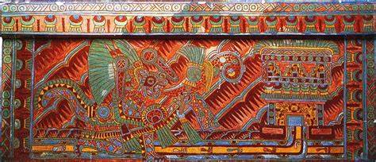
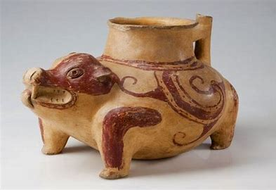
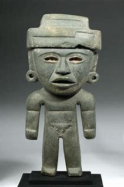

Arte y Cultura
La civilización de Teotihuacán fue una de las más sofisticadas y duraderas del México antiguo. Su arte y cultura reflejan una sociedad altamente organizada, profundamente religiosa y con una marcada visión del orden cósmico. Entre los siglos I y VII d.C., desarrollaron un estilo artístico distintivo y una cultura urbana compleja, que influiría en generaciones posteriores de Mesoamérica.
Características generales del arte teotihuacano
El arte de Teotihuacán se caracteriza por su estilo geométrico, simbólico y colectivo, a diferencia del estilo individualista de otras culturas. Se enfocaba en la representación de ideas religiosas, naturales y sociales, más que en retratos o escenas realistas.
- Uso de colores vivos como rojo, verde, azul y ocre.
- Figuras estilizadas y repetitivas, especialmente en la decoración mural.
- Simbología religiosa con animales, dioses y elementos naturales.
- Ausencia casi total de escritura: su arte era su principal medio de comunicación ideológica.
Pintura mural: color y simbolismo
Teotihuacán es una de las culturas prehispánicas con mayor legado en pintura mural. Estos murales muestran escenas míticas, dioses, rituales, animales simbólicos (como jaguares, búhos y mariposas), flores, agua y fuego.
Uno de los más famosos es el de la Gran Diosa, en Tepantitla, representada con tocado floral, brazos abiertos y agua fluyendo de sus manos, rodeada de pájaros y plantas, lo que sugiere una conexión con la fertilidad y la abundancia.
Cerámica: función, estilo y variedad
La cerámica teotihuacana fue tanto utilitaria como ceremonial. Existen múltiples tipos, entre los que destacan:
- Incensarios: muy elaborados, con mascarones y decoraciones tridimensionales.
- Vasijas trípodes, cuencos y platos, con diseños geométricos y motivos animales.
- Estatuillas de barro cocido, que representaban mujeres, guerreros, sacerdotes y músicos.
Escultura y máscaras
Las esculturas en piedra y barro reflejan el pensamiento religioso y ceremonial de Teotihuacán. Destacan las máscaras funerarias de piedra verde, sin agujeros para los ojos ni la boca, usadas en contextos rituales.
Arquitectura como arte cultural
En Teotihuacán, el arte y la arquitectura están íntimamente ligados. Los edificios no solo cumplían funciones prácticas o ceremoniales, sino que eran verdaderas expresiones simbólicas.
- Pirámide del Sol: la estructura más grande de la ciudad, con orientación astronómica.
- Pirámide de la Luna: alineada con el cerro Gordo, relacionada con la fertilidad.
- Templo de la Serpiente Emplumada: decorado con cabezas esculpidas de serpientes y conchas.
Cultura urbana y organización social
Teotihuacán no fue solo un centro religioso, sino una metrópoli multicultural. Albergó a más de 100,000 habitantes organizados en barrios según sus actividades u orígenes étnicos.
- Artesanos: trabajaban en cerámica, textiles, obsidiana y pintura.
- Comerciantes: intercambiaban bienes como sal, jade, cacao y plumas.
- Sacerdotes y guerreros: figuras clave en el orden ritual.
- Agricultores: sustentaban la ciudad con técnicas de riego y cultivo intensivo.
Música, danza y vestimenta
El arte también incluía música ritual, con instrumentos como flautas, tambores, caracoles marinos y sonajas. La danza acompañaba las ceremonias religiosas.
La vestimenta ritual era rica y colorida, especialmente para los sacerdotes y guerreros: usaban tocados de plumas, sandalias, túnicas decoradas, pectorales, orejeras y máscaras ceremoniales.
Legado artístico y cultural
Tras el colapso de Teotihuacán (hacia 650 d.C.), su arte y cultura siguieron vivos en otras civilizaciones. Los toltecas, mixtecas y mexicas retomaron su estilo arquitectónico, la imagen de la Serpiente Emplumada y el simbolismo cósmico.
Teotihuacán fue tan influyente que los mexicas consideraban que allí se había creado el Sol y la Luna. Llamaron al sitio "Teotihuacán", que en náhuatl significa "Lugar donde nacen los dioses".
Su legado perdura hoy en museos, ruinas, murales preservados y en la identidad cultural de México. Es una muestra poderosa del valor del arte como expresión colectiva, religiosa y eterna.
Pintura mural Cerámica Escultura y máscaras
  